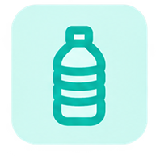
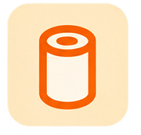
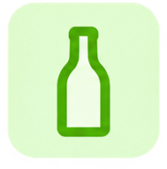
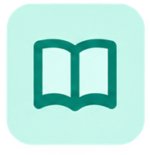

ようこそ
ごみなびへ
ごみをかんたんに
捨て場所を探せるアプリです。
画面をタップして次へ

写真を撮るだけで
ごみの捨て場所がわかる
ごみの写真を撮ると、
正しい分別方法と近くの
ごみ箱が見つかります。
画面をタップして次へ

クチコミから
ごみの満タン状況が
把握できる。
みんなの投稿で、近くのごみ箱の
混み具合を確認できます。
言語を選択してください
読める言語をお選びください。
捨てたいごみを撮影してください
ごみ全体が写るように撮影してください。
複数のごみを検出しました
分類したいものを1つ選んでください。
ごみを検出できませんでした。
人物が写っている、ピントが合っていないなど、判別できない写真の可能性があります。
正しい撮影方法
以下のポイントを確認して、もう一度撮影してください。
撮影のポイント
- ごみ全体が画面いっぱいに写るようにしてください
- 明るい場所で、影ができないように撮影してください
- なるべく無地の背景の上に置いて撮影してください
こんな写真はNG
- 人物や顔が写り込んでいる
- ピントがぼやけている
- 遠すぎる、または暗すぎる
ペットボトル
資源ごみ
決められた回収日に、透明な袋に入れて出します。
捨て方
- キャップとラベルは外して「プラスチック」に分けます。
- つぶしてから出すと、収集がスムーズです。
洗っていないペットボトルは収集されない場合があります。
周辺のごみ箱

京都駅前 分別ステーション



ふたを閉めてから入れてください。
四条通 ごみ箱
紙ごみは入れられません。
河原町 リサイクルボックス

収集後に空きが戻る場合があります。
京都駅前 分別ステーション
150m ・ 徒歩2分
対応ごみ
ご協力ありがとうございます！
みんなで街をきれいに保つ取り組みに、ご協力いただきありがとうございます。
このごみ箱はどうでしたか？
ご協力ありがとうございます。
みんなのクチコミ
該当するごみが見つかりませんでした。
ごみの名前を変えて、もう一度お調べください。
分類情報を取得できませんでした。
もう一度お試しください。